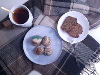
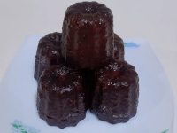

 |
伯爵茶 馬卡龍 |
|---|---|
| 甜橙生巧 馬卡龍 |
|
| 焦糖奶油 夾心餅乾 |
|
 |
可麗露 |
基本資料
| 姓名 | 陳明賢 Shen |
|---|---|
| 出生年月日 | 088/04/21 |
| 年齡 | 26歲 |
| 電子信箱 | solove5171@gmail.com |
| 學歷 | 國立空中大學 |
| 連絡電話 | 0963616228 |
技能
-
Python
-
HTML
-
CSS
-
Bootstrap
-
Linux
-
MySQL
-
Photoshop
作品集
捲動測試
興趣
人格特質
我的MBTI類型為: INFJ
| 強烈的使命感與目的導向: | 熱衷於創造有意義、有影響力的事物。特別在意「這個功能能幫助誰？」、「這個系統是否符合用戶真實需求？」 |
|---|---|
| 深度思考與系統設計能力: | 善於預見長期結果，擅長規劃結構和解決複雜問題。 |
| 高度同理心與用戶導向思維: | 能站在他人角度思考、設身處地理解需求。 |
| 注重品質與細節: | 做事謹慎、有強烈責任感，不容忍錯誤。 |
| 獨立作業與自我成長能力強: | 喜歡獨立深度思考、習慣自我提升。 |
轉職經歷
從2019至2025年任職於基隆市警察局第二分局八斗子分駐所擔任基層員警，因從事警職是為家人安排，與我的個性以及興趣不合，因此決定轉職。
雖然從一開始便不打算一直從事警職，但我並沒有蹉跎光陰，利用休假時間培養烘焙興趣，也因為朋友的關係接觸到程式撰寫，我發現烘焙與撰寫程式都會帶給我成就感，在遇到瓶頸的時候也會激起我深入研究的動機，因此決定轉換跑道，從事工程師。
我在這五年累積了在高壓環境中快速決策、與人溝通協調以及解決問題的豐富經驗。轉職為全端工程師後，我會延續這些能力，在開發過程中精準掌握需求、細心維護程式品質，並能與團隊有效協作，確保專案如期完成。我認為這五年的警職經驗對我轉職成工程師會有許多幫助:
| 解決問題的能力 | 作為員警，需要快速反應並處理突發事件，在 debug 程式碼、系統異常時的應變能力較佳。 |
|---|---|
| 溝通與團隊合作 | 經常與民眾、同仁或其他單位協作，在開發團隊中跨部門溝通協作能力較佳。 |
| 細心與紀律 | 處理公文、證據或調查時的需要相當的精準度，對寫 code、維護資料庫、API串接等細節導向的工作來說是一種優勢。 |
| 壓力管理與責任感 | 經歷高壓與高風險環境，代表我能在緊迫時限下完成任務，在產品開發或緊急修復時能有幫助。 |